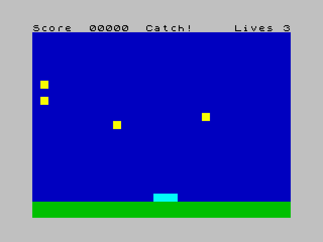

12. Games and demos
The chapters so far are pieces: a screen, sprites, sound, controls. This one puts them together, the way a game or a demo is put together, and examples/ch12_game.asm is a small whole game: Catch. Stars fall; move the paddle along the bottom to catch them.

The frame loop
A Spectrum game is a loop that runs once a frame: read the controls, move everything, draw what changed, play the sound, and wait for the next frame. The guide's startup (chapter 4) is that loop: HALT waits for the interrupt, then Frame runs. Two rules keep it smooth:
- Fit in a frame. If
Frametakes longer than 69,888 T-states (less the interrupt's time), the game runs at 25 frames a second, and everything moves half as fast or jerks. The profiler (chapter 2) says where the time goes, and chapter 10 how to get it back. - Move by the frame, not by the loop. Speeds are in pixels (or cells) a frame, so the game runs the same on every Spectrum. A 128K's frame is 1.5% longer than a 48K's (70,908 T-states against 69,888, chapter 3), but both are 50 a second, so a game counted in frames plays the same on both.
Catch draws only with attributes: each star, the paddle and the ground are character cells coloured by their paper, so drawing a star is writing one byte, and rubbing it out another. That's the cheapest graphics a Spectrum has (and there's no attribute clash, since nothing else shares the cells). Most of its frame is spent waiting.
States
A game is in one of a few states: a title screen, playing, a life lost, game over. Each has its own frame routine, and the main one only chooses between them:
Frame:
ld a,(State)
or a
jr nz,Over
Playing:
call MovePaddle
call MoveStars
jp ShowScore
; Game over: the stars stop; ENTER or fire starts again.
Over:
call ReadControls
and FIRE
ret z
NewGame:
...Keeping states apart, each with a clear start (NewGame sets up everything a game needs, every time), is what stops the bugs that only happen on the second game.
Moving things on a timer
Each star in Catch has three bytes: its row, its column, and a count of frames until it next moves. Each frame the count goes down; at 0 the star falls a row and the count starts again from Speed, which gets smaller as the score goes up. The same pattern (a counter per object, reloaded when it runs out) gives every object its own speed with no multiplication.
Controls
ReadControls reads the keys (O and P, and ENTER), Sinclair joystick 1 (6, 7 and 0) and a Kempston joystick, and returns one byte of left, right and fire, so the rest of the game never knows which was used (chapter 9). It checks the Kempston isn't a phantom (left and right at once means nothing's there).
Random numbers
Where each star starts is random. The Spectrum has nothing that makes random numbers, so programs make them: Catch uses an 8-bit xorshift, which goes through all 255 values from 1 to 255 before repeating:
; Random: the next of 255 numbers from 1 to 255 (an 8-bit xorshift: x ^= x << 1, x ^= x >> 1, x ^= x << 2).
Random:
ld a,(Seed)
ld b,a
add a,a
xor b
ld b,a
srl a
xor b
ld b,a
add a,a
add a,a
xor b
ld (Seed),a
retThe seed must never be 0 (xorshift stays at 0 forever), so Catch takes it from Frames with bit 0 set, at the start. (LD A,R is often used instead; the refresh register counts with every instruction, so it's only as random as the code before it is irregular.) Other common sources: the ROM's bytes as a table of "random" numbers, or a 16-bit xorshift for longer runs.
Sound in a game
Catch clicks the beeper when a star is caught: 32 changes of the speaker bit, a few thousand T-states, short enough to fit in the frame. That's how most 48K games did effects: short bursts, never long enough to hold the game up. On a 128K, effects go on the AY, on a voice the music leaves free (chapter 7).
A demo
A demo is put together the same way, with parts in place of states: each part has its own Init and Frame, and the main loop moves to the next part after so many frames, or when the music says. The guide's examples are each one part: the border bars (chapter 5), a scroller, multicolour, the AY player (chapter 7). A demo runs the music from the interrupt, so it plays on across parts, and puts each part's set-up (tables, pre-shifted graphics) in the time while the last part is still running, or behind a fade.
On a 128K the parts can sit in different banks, each paged in when it runs (chapter 8), and the music in another; a 48K demo usually loads each part from tape, or depacks it from a cruncher's packed data, between parts.
Testing
Run it on every machine it claims to support: a 48K, a 128K and a +2A at least (chapter 8 has what differs), in two emulators. Play it to the end, game over and a new game included. The guide's own test suite runs Catch to its main loop on a 48K and a 128K, and checks it goes back to BASIC cleanly.